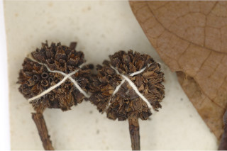
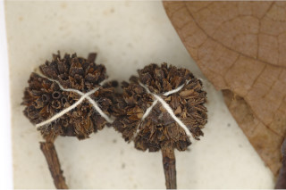

Images :

 



| Habit : | Deciduous trees up to 15 m tall. |
| Leaves : | Leaves simple , opposite , decussate ; stipules large, obovate with keeled back, interpetiolar , caducous and leaving scar ; petioles 1-3 cm long, planoconvex in cross section, glabrous ; lamina 10-20 x 4.5-10 cm, ovate , elliptic-ovate , apex acuminate , rarely acute , base truncate to obtuse , margin entire , coriaceous , glabrous beneath; midrib flat above; secondary_nerves up to 12 pairs; tertiary_nerves distantly obliquely percurrent . |
| Inflorescence / Flower : | N/A |
| Fruit and Seed : | N/A |